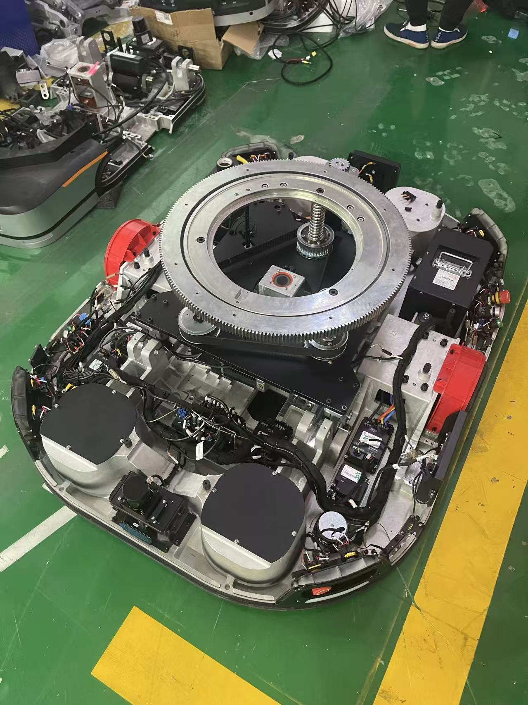
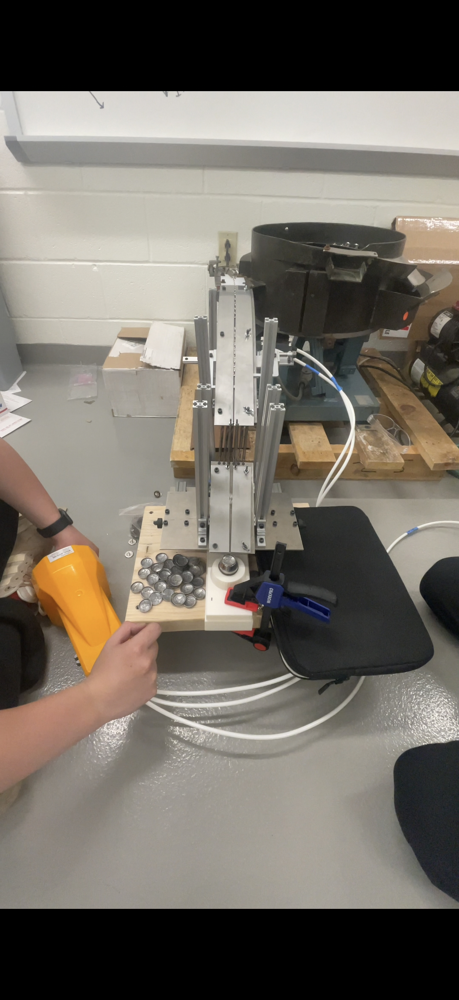
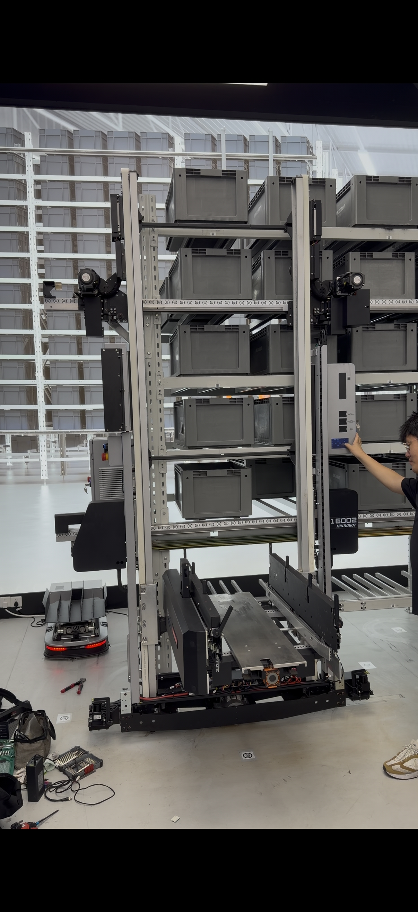
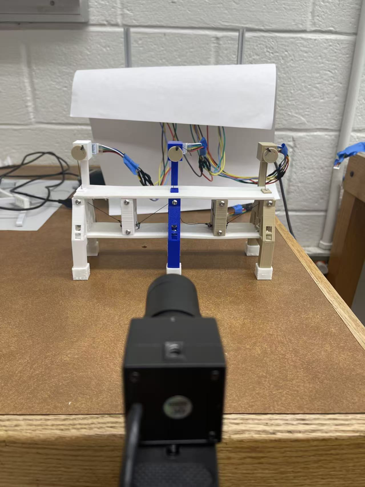
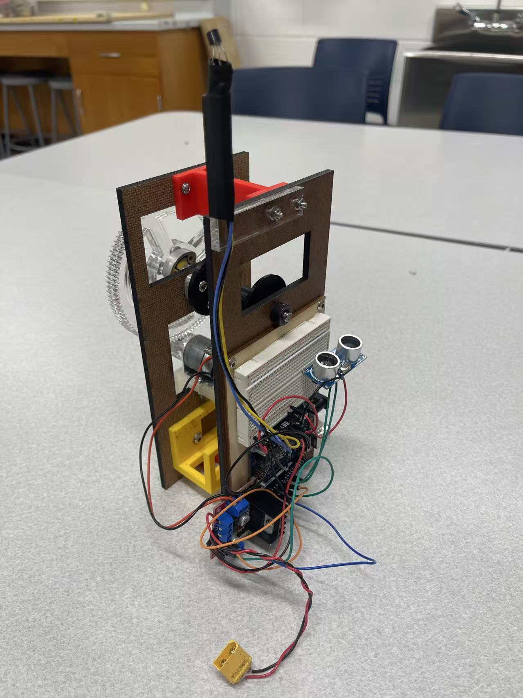

I design, build, and test robotic mechanisms.
Dual-degree master’s student at Carnegie Mellon University, pursuing an M.S. in Mechanical Engineering and an M.S. in Engineering & Technology Innovation Management (ETIM). I work across mechanical design, prototype integration, and physical validation to turn engineering requirements into working hardware.
Selected engineering work
Selected projects showing how I approach mechanisms, integration, failure analysis, and testing.

01 / Dahua / HuaRay · 2023AMR Lift Reliability
Investigating structural failures, revising a lifting mechanism, and validating the redesign through full-load durability testing.

02 / Waterbury Button Company · 2024–2025Button Assembly Automation
From a repetitive manual operation to a working pneumatic assembly machine: requirements, mechanism design, fabrication, and commissioning.

03 / Hikrobot · 2026Industrial Robot Development
Developing mechanical components and supporting their transition from CAD and prototype assembly to validation and production release.
 04 / Bucknell University · 2024
04 / Bucknell University · 2024Origami-Inspired Soft Gripper
Connecting compliant geometry, additive manufacturing, base deformation analysis, and robot-mounted grasp experiments.

05 / BUCKNELL UNIVERSITY · 2023–2024Caterpillar-Inspired Soft Robot
Designing compliant tendon-driven segments and investigating crawling, climbing, and hanging through fabrication, force measurements, and motor control.

06 / Bucknell University · 2024Rope-Climbing Robot
A cable-climbing prototype that ascends with a payload, slows near a target, collects temperature data, and returns home.
 07 / Bucknell University · ECEG 205 · 2023
07 / Bucknell University · ECEG 205 · 2023Line-Following Robot
A team-built mobile robot combining reflectance sensing, motor-control tuning, a custom sensor mount, and temperature-based operation.
Experience in practice
Robotic hardware integration & testing
Adapting a robotic hand for xArm integration, fabricating mechanical interfaces, and developing Python grasp tests with data logging and pass/fail checks.
Robotics engineering internship
Mechanical component development, prototype assembly, reliability testing, and engineering documentation.
Manufacturing engineering internship
Supported integration and commissioning of automated assembly and testing workstations, including fixtures, sensors, and actuators.
AMR engineering internship
Mechanical subsystem development, structural failure investigation, engineering drawings, and durability validation.
From analysis to the test bench.
I’m Kevin, a mechanical engineering graduate student interested in robotic hardware and the practical work required to make a mechanism function reliably: understanding loads, selecting components, resolving assembly issues, and testing the finished system.
My background spans industrial mobile robots, manufacturing automation, and compliant mechanisms. Alongside hands-on engineering, my studies in technology innovation management inform how I approach requirements, suppliers, project planning, and delivery.
Soft robotics research
Caterpillar-inspired soft robot · Bucknell
Designed and fabricated tendon-driven segments using PLA and Filaflex. Combined force measurements, MATLAB motion analysis, and Arduino/C++ control to investigate crawling, climbing, and hanging gaits.
Carnegie Mellon University
M.S. Mechanical Engineering
M.S. Engineering & Technology Innovation Management
Expected May 2027
Bucknell University
B.S. Mechanical Engineering
Minor in Mathematics
May 2025
SolidWorks · GD&T · Abaqus · COMSOL · 3D printing · Mechanical assembly · Durability testing · Python · MATLAB · Arduino
Let’s discuss engineering opportunities.
Interested in mechanical design, robotic hardware, and validation roles.